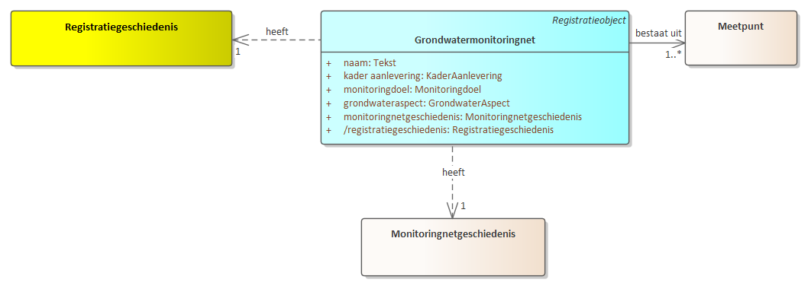
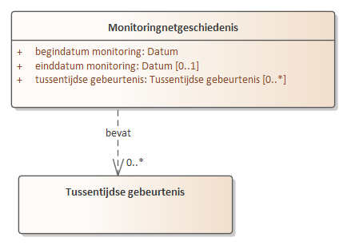

Creative Commons Attribution 4.0 International Public License (CC-BY)
Samenvatting
Samenvatting van informatiemodel.
Status van dit document
Deze paragraaf beschrijft de status van dit document ten tijde van publicatie. Het is mogelijk dat er actuelere versies van dit document bestaan. Een lijst van Geonovum publicaties en de laatste gepubliceerde versie van dit document zijn te vinden op https://www.geonovum.nl/geo-standaarden/alle-standaarden.
Dit is een werkversie die op elk moment kan worden gewijzigd, verwijderd of vervangen door andere documenten. Het is geen door de werkgroep goedgekeurde consultatieversie.
1. Inleiding
1.1 Doel en doelgroep
In de basisregistratie ondergrond (BRO) wordt een aantal typen gegevens geregistreerd, de registratieobjecten.
Een catalogus is de gegevensdefinitie van een registratieobject en beschrijft welke gegevens van het object in de BRO zijn opgeslagen.
Het document is bedoeld voor alle gebruikers van de BRO en moet duidelijk maken welke gegevens er precies in het systeem zitten.
Aan aanleverende partijen moet het vertellen welke gegevens in de basisregistratie ondergrond moeten komen en aan welke eisen die moeten
voldoen, en aan afnemende partijen welke gegevens zij in de basisregistratie ondergrond mogen verwachten.
Het document is voor een breed publiek bedoeld en de informatie moet naast precies ook begrijpelijk zijn.
1.2 Totstandkoming
Een catalogus is het resultaat van een proces van standaardisatie dat geruime tijd in beslag kan nemen. De standaardisatie is een open proces waarin de belanghebbende partijen actief betrokken worden. Het eindresultaat wordt door de wetgever vastgesteld in een ministeriële regeling.
In bepaalde gevallen is de verscheidenheid aan gegevens van een object zo groot, dat er eerst deelverzamelingen worden gedefinieerd. Het standaardisatieproces wordt dan per deelverzameling doorlopen. De deelverzamelingen worden zo gekozen dat de gegevens die in de bijbehorende catalogus worden beschreven, direct na vaststelling aan de BRO kunnen worden aangeleverd. Wanneer er deelverzamelingen worden onderscheiden, komt de catalogus van het registratieobject dus gefaseerd tot stand. Omdat inzichten in de loop van de tijd kunnen wijzigen kan het aan het eind van het hele proces nodig blijken revisies door te voeren om ongewenste verschillen tussen deelverzamelingen weg te nemen.
1.3 Beheer
Een vastgestelde catalogus wordt met het daarbij horende deel van het systeem van de basisregistratie ondergrond in gebruik genomen.
De eerste formeel vastgestelde catalogus krijgt het versienummer 1.0. Verwacht mag worden dat er na enige tijd behoefte gaat ontstaan aan gegevens die nog niet in de catalogus zijn opgenomen.
Het versiebeheer van de catalogus moet nog worden ingericht.
1.4 Leeswijzer
Hoofdstuk 1 geeft het doel en de doelgroep van een catalogus.
Hoofdstuk 2 behandelt enkele algemene aspecten van het BRO-systeem en begrippen van algemene aard.
Hoofdstuk 3 plaatst het object in de gegevenssystematiek van de basisregistratie ondergrond en vertelt wat de benadering is geweest bij het opstellen van de gegevensdefinitie.
Hoofdstuk 4 vertelt hoe de catalogus is opgebouwd en welke aspecten van de gegevens daarin worden beschreven.
Hoofdstuk 5 geeft de inhoud weer van het eerste en tweede artikel van de ministeriële regeling en dat is het deel waarin de definitie is opgenomen van het registratieobject, van de delen waaruit het is opgebouwd, de entiteiten, en van de eigenschappen van die delen, de attributen.
2. Algemene kenmerken en begrippen
2.1 Opzet van de landelijke voorziening
De landelijke voorziening van de basisregistratie ondergrond is een systeem dat een schakel vormt in een informatieketen. Aan het begin van de keten staan bestuursorganen die opdracht geven tot de productie van gegevens, of zelf gegevens produceren. Die bestuursorganen worden bronhouders genoemd. De geproduceerde gegevens worden door een dataleverancier geleverd aan de beheerder van het systeem, de registerbeheerder. De bronhouder is verantwoordelijk voor de levering van gegevens. Hij kan besluiten zelf dataleverancier te zijn of andere partijen een machtiging voor levering te verlenen. De beheerder van de landelijke voorziening van de BRO registreert de aangeleverde gegevens en levert ze voor (her)gebruik door aan allerlei afnemers.
De opzet van het systeem moet begrepen worden vanuit de verantwoordelijkheden die in de keten zijn belegd. De aangeleverde gegevens vallen onder de verantwoordelijkheid van de bronhouder en de registerbeheerder mag die gegevens niet veranderen. De registerbeheerder moet echter wel gegevens toevoegen om het systeem te kunnen beheren en hij kan gegevens toevoegen om de afnemers goed van dienst te kunnen zijn.
Bij wet is geregeld dat de basisregistratie ondergrond zo wordt opgezet dat er onderscheid bestaat tussen de gegevens die aan de registerbeheerder zijn aangeleverd en de gegevens die de registerbeheerder aan de afnemers verstrekt. Het systeem valt uiteen in twee grote deelsystemen, het register brondocumenten ondergrond en de registratie
ondergrond (zie figuur 1).
Een geheel van gegevens dat door of onder verantwoordelijkheid van een bronhouder wordt aangeleverd, wordt een brondocument genoemd. De brondocumenten worden in het register brondocumenten ondergrond opgeslagen. De gegevens uit de brondocumenten worden samen met de gegevens die de registerbeheerder toevoegt in de registratie ondergrond vastgelegd. De registratie ondergrond is het deelsysteem dat gebruikt wordt voor uitgifte.
Figuur 1De twee grote deelsystemen van de landelijke voorziening van de BRO.
Met deze opzet verkrijgt het systeem de nodige flexibiliteit. Zo kan een object in de registratie ondergrond gegevens bevatten die uit meer dan één brondocument afkomstig zijn en bij uitgifte kunnen gegevens van verschillende objecten met elkaar gecombineerd worden. Ook is het mogelijk met het brondocument gegevens op te slaan die alleen voor de bronhouder en de aanleverende partij van belang zijn.
De catalogus dekt alle gegevens die opgenomen zijn in de registratie ondergrond. Verreweg de meeste gegevens komen uit de brondocumenten die de dataleverancier aanlevert en een paar gegevens komen voort uit de overdracht van een brondocument aan de registerbeheerder. Aan de aangeleverde gegevens worden enkele gegevens door de registerbeheerder toegevoegd. Als een gegeven is toegevoegd door de BRO wordt dat in de beschrijving expliciet vermeld.
Alle gegevens in de registratie ondergrond worden uitgegeven, maar niet alle afnemers kunnen alle gegevens geleverd krijgen. De gegevens die niet aan alle afnemers worden uitgeleverd zijn de gegevens die alleen nodig zijn in de communicatie tussen de registerbeheerder enerzijds en de dataleveranciers en bronhouders anderzijds.
2.2 Registratieobject
Het registratieobject is dé eenheid in de data-architectuur van de basisregistratie ondergrond. Voor de registerbeheerder is het de elementaire bouwsteen van het systeem dat hij moet beheren.
Een registratieobject verwijst naar een eenheid van informatie die onder de verantwoordelijkheid van één bronhouder valt en die met een bepaald doel is of wordt gemaakt. Het is in directe of indirecte zin gedefinieerd in de ruimte en dat wil zeggen dat een registratieobject een plaats op het aardoppervlak heeft of dat het gekoppeld is aan een ander type registratieobject met een plaats op het aardoppervlak.
Een registratieobject is niet alleen in de ruimte maar ook in de tijd gedefinieerd. Het leven van een registratieobject begint op het moment dat de gegevens zijn geregistreerd en dat is zo kort mogelijk nadat de gegevens zijn geproduceerd. De levensduur van een registratieobject, en de veranderlijkheid van de gegevens verschilt van object tot object. Een grondwatermonitoringput kan tientallen jaren gebruikt worden voor het meten van grondwaterstanden en in de periode kunnen er nieuwe gegevens ontstaan. Dat betekent dat de gegevens van de put in de registratie ondergrond gedurende zijn hele levensduur bijgewerkt moeten kunnen worden. Aan de andere kant van het spectrum staan de objecten waarvan alle gegevens in een keer worden vastgelegd. Geotechnisch sondeeronderzoek is daar een voorbeeld van. Sondeeronderzoek is eenmalig onderzoek en het resultaat ervan kan al na een of enkele dagen aan de bronhouder worden overhandigd.
2.3 Registratiedomein
Registratieobjecten worden in de basisregistratie ondergrond gegroepeerd in domeinen. Vooralsnog worden zes domeinen onderscheiden:
bodem- en grondonderzoek
bodemkwaliteit
grondwatermonitoring
grondwatergebruik
mijnbouwwet
modellen.
De domeinen zijn vanuit het oogpunt van beheer van belang voor de ordening van het systeem. Daarnaast zijn zij nuttig in de communicatie met de partijen die bij de realisatie van het systeem betrokken zijn.
2.4 Kwaliteitsregime
In de basisregistratie ondergrond worden niet alleen gegevens geregistreerd die dateren van na de datum waarop de wet van kracht is geworden. Ook oudere gegevens zullen in de basisregistratie ondergrond worden opgenomen. De noodzaak daartoe ligt in de wet verankerd. Die schrijft voor dat de gegevens uit de eerder bestaande systemen DINO en BIS zo veel mogelijk naar de BRO moeten worden overgezet. Verder staat de wet toe dat bronhouders tot vijf jaar na de inwerkingtreding van de wet historische gegevens ter registratie mogen aanbieden.
Historische gegevens kunnen niet altijd voldoen aan de strikte regels die de BRO stelt. Zo kan het voorkomen dat voor gegevens die volgens de strikte regels van de BRO verplicht zijn, geen waarde bekend is. Om de verwerking van de twee categorieën gegevens naast elkaar mogelijk te maken, worden twee kwaliteitsregimes gehanteerd. Voor de aanlevering van gegevens volgens de strikte regels geldt het IMBRO-regime. Bij de aanlevering van historische gegevens wordt geaccepteerd dat een aantal formeel verplichte gegevens geen waarde heeft. Voor deze gegevens wordt het IMBRO/A-regime gehanteerd en dat kent dus minder strikte regels.
De introductie van de twee kwaliteitsregimes geeft de bronhouder gedurende een bepaalde periode een zekere mate van vrijheid. Het kan bijvoorbeeld praktisch blijken het IMBRO/A-regime te hanteren voor gegevens die weliswaar pas na de datum waarop de wet in werking is getreden zijn geproduceerd maar die voortkomen uit opdrachten die al voor die datum zijn gegeven. Ook kan het voorkomen dat historische gegevens wel aan alle strikte voorwaarden voldoen en dan is het wenselijk de gegevens onder IMBRO-regime aan te leveren.
De periode waarin de bronhouders die vrijheid hebben wordt de transitieperiode genoemd. Over de duur van de transitieperiode zijn nog geen afspraken gemaakt. Na afloop van de transitieperiode kan alleen onder het strikte IMBRO-regime worden aangeleverd.
2.5 Formele en materiële geschiedenis
De basisregistratie ondergrond maakt deel uit van een stelsel van basisregistraties. Binnen het stelsel maakt men onderscheid tussen de materiële geschiedenis en de formele geschiedenis van een object.
Het begrip materiële geschiedenis wordt gebruikt om de veranderingen van eigenschappen van een object in de werkelijkheid aan te duiden. De materiële geschiedenis van een object wordt, voor zover relevant, in de registratie ondergrond vastgelegd. Niet alle registratieobjecten hebben een materiële geschiedenis, alleen de objecten met een levensduur, zoals de grondwatermonitoringput.
Het begrip formele geschiedenis wordt gebruikt voor de veranderingen van eigenschappen van een object in de registratie zelf. De meeste van die veranderingen gaan terug op een verandering van eigenschappen in de werkelijkheid, en de formele geschiedenis geeft aan wanneer de veranderingen in het systeem geregistreerd zijn. De formele geschiedenis kent ook gebeurtenissen die niet het gevolg zijn van een verandering in de werkelijke eigenschappen van een object. Die gebeurtenissen hebben betrekking op correcties. Het kan gebeuren dat een bronhouder erachter komt dat er een onjuiste waarde was geregistreerd en dan zorgt hij ervoor dat die verbeterd wordt. De registratie van de verbetering is een formele gebeurtenis.
Alle registratieobjecten hebben een formele geschiedenis en die wordt in de registratie ondergrond globaal vastgelegd in de registratiegeschiedenis van het object. Globaal wil zeggen dat de registratie ondergrond alleen een overzicht van de formele geschiedenis geeft. Voor de details moet het register brondocumenten ondergrond worden geraadpleegd.
Bij correctie wordt het betreffende gegeven in de registratie ondergrond overschreven en is de oude waarde van het gegeven niet meer direct beschikbaar voor de afnemers.
Zou een afnemer toch willen weten wat de eerdere foute waarde was, dan moet hij het register brondocumenten ondergrond raadplegen.
2.6 Coördinaten en referentiestelsels
De registratieobjecten van de basisregistratie ondergrond zijn gedefinieerd in de ruimte en dat wil zeggen dat een object zelf een plaats op het aardoppervlak, een locatie, heeft, of dat het gekoppeld is aan een ander type registratieobject met een locatie. Afhankelijk van het type registratieobject, wordt de locatie geregistreerd als een punt, een lijn of een vlak.
De locatie is de horizontale positie van een object. Voor bepaalde objecten is het voldoende dat alleen die horizontale positie wordt vastgelegd, maar voor veel objecten is ook de verticale positie van belang.
Posities worden vastgelegd in coördinaten en die zijn gedefinieerd in een bepaald referentiestelsel.
Er zijn verschillende typen referentiestelsels. Zo spreekt men van horizontale referentiestelsels (2D), verticale referentiestelsels (1D), gecombineerde referentiestelsels (2D, 1D) en werkelijke 3D referentiestelsels. In Nederland worden de horizontale en de verticale component van een positie in een afzonderlijk stelsel uitgedrukt. Het is vandaag de dag mogelijk met gps een positie in een 3D-referentiestelsel vast te leggen, maar de wens over te stappen op het gebruik van 3D is nog door geen van de partijen die betrokken zijn bij de basisregistratie ondergrond naar voren gebracht.
2.6.1 Referentiestelsels voor de horizontale positie
In Nederland zijn traditioneel verschillende referentiestelsels voor de horizontale positie in gebruik. In 2009, bij de eerste voorbereidingen voor de totstandkoming van de basisregistratie ondergrond, is al vastgesteld dat de verscheidenheid aan referentiestelsels de basisregistratie ondergrond voor problemen stelt omdat de registratie dan niet gemakkelijk op een eenduidige manier bevraagd kan worden. In de registratie ondergrond worden namelijk zowel gegevens met een locatie op land als gegevens met een locatie op zee geregistreerd. In de toenmalige praktijk werden op land en op zee verschillende stelsels gebruikt. Op land werd RD gebruikt en op zee waren verschillende stelsels in gebruik, waarvan WGS84 de belangrijkste was.
In 2009 was ook al bekend dat de Europese kaderrichtlijn INSPIRE de lidstaten vraagt de gegevens in Europa in één referentiestelsel uit te gaan wisselen, te weten in ETRS89. Met dat in gedachten, is het besluit genomen het BRO-systeem zo in te richten dat de registratie bevraagd gaat worden in ETRS89.
Het besluit wordt ondersteund door ontwikkelingen in Nederland. Sinds 2013 wordt er door de drie belangrijkste autoriteiten in Nederland op het gebied van referentiestelsels, het Kadaster, de Dienst der Hydrografie en Rijkswaterstaat, gewerkt aan de totstandkoming van nieuwe afspraken. Die afspraken moeten in lijn zijn met Europese afspraken en leiden tot heldere en eenduidige transformatieprocedures tussen referentiestelsels. Concreet betekent dit dat in Nederland op termijn het ETRS89-stelsel als standaard zal worden gehanteerd voor het uitwisselen van geo-informatie.
Het besluit betekent niet dat de gegevens ook in ETRS89 aangeleverd moeten worden. De basisregistratie ondergrond voorziet een periode van transitie waarin de aanleverende partijen zelf bepalen wanneer zij overstappen op ETRS89. Die periode zal naar verwachting jaren duren. Om de transitie te ondersteunen hanteert de basisregistratie ondergrond de volgende spelregels:
Gegevens mogen in een beperkt aantal referentiestelsels worden aangeleverd (RD, WGS84 en ETRS89).
Voor locaties op land wordt alleen RD of ETRS89 toegestaan.
Voor locaties op zee wordt alleen WGS84 of ETRS89 toegestaan.
De aangeleverde coördinaten worden in de registratie opgeslagen.
De aangeleverde coördinaten worden door de basisregistratie ondergrond getransformeerd naar
het ETRS89 referentiestelsel.
De getransformeerde coördinaten worden naast de aangeleverde coördinaten opgeslagen.
Bij de getransformeerde coördinaten wordt ook een identificatie van de gebruikte transformatiemethode opgeslagen.
Als de coördinaten in ETRS89 zijn aangeleverd, dan staat bij aangeleverde en getransformeerde positie dezelfde
informatie. Voor de locatie worden de getransformeerde coördinaten en de aangeleverde coördinaten beide
aan de afnemers verstrekt.
2.6.2 Referentiestelsels voor de verticale positie
In Nederland zijn voor verticale posities op land en zee verschillende referentiestelsels in gebruik. Op land wordt NAP gebruikt. Op zee is het in de voor de BRO relevante werkvelden gebruikelijk posities uit te drukken t.o.v. het gemiddeld zeeniveau (MSL, Mean Sea Level), maar posities t.o.v. LAT komen ook voor (Lowest Astronomical Tide). Dit laatstgenoemde stelsel wordt in de kaderrichtlijn INSPIRE genoemd als het stelsel van voorkeur voor het uitdrukken van verticale posities op zee. De basisregistratie ondergrond staat daarom op zee het gebruik van LAT naast MSL toe. Aangeleverde verticale posities worden door de BRO niet getransformeerd.
2.7 Gegevens op land en op zee
De basisregistratie ondergrond bevat gegevens over de ondergrond van Nederland en zijn zgn. Exclusieve Economische Zone (EEZ). De EEZ is het gebied op de Noordzee waar Nederland economische rechten heeft. Voor de referentiestelsels die bij aanlevering worden toegestaan, is het van belang te weten of de locatie van een object op zee of op land ligt.
Als scheidingslijn tussen land en zee wordt in de basisregistratie ondergrond de UNCLOS-basislijn gehanteerd. Het beheer van de basislijn valt onder de verantwoordelijkheid van de Dienst der Hydrografie van het ministerie van Defensie. Deze dienst voert die taak uit op basis van het Zeerechtverdrag van de Verenigde Naties uit 1982, dat in het Engels de United Nations Convention on the Law of the Sea (UNCLOS) heet.
De basislijn is opgebouwd uit de nulmeterdieptelijn zoals weergegeven op de zeekaarten en enkele rechte basislijnen die onder meer de monding van de Westerschelde en de wateren tussen de Waddeneilanden afsluiten.
De grens tussen land en zee is veranderlijk. De Dienst der Hydrografie stelt de grens opnieuw vast wanneer daartoe voldoende aanleiding is. De BRO hanteert bij inname de meest recente versie van de UNCLOS-basislijn en controleert daarmee of de juiste referentiestelsels gebruikt worden.
Tussen het moment waarop de locatie van een object wordt bepaald en het moment waarop het gegeven in de basisregistratie ondergrond wordt vastgelegd verloopt enige tijd. In die periode kan de positie van de UNCLOS-basislijn opnieuw zijn vastgesteld, en dan ontstaat er een discrepantie die bij het aanleveren van gegevens tot problemen kan leiden. Wanneer een dergelijk probleem zich voordoet, wordt de dataleverancier gevraagd contact op te nemen met de registratiebeheerder om gezamenlijk tot een oplossing te komen.
Een soortgelijk probleem doet zich voor met betrekking tot de begrenzing van Nederland, met name van het Nederlands territoir. De grenzen van Nederland worden ieder jaar op 1 januari vastgesteld door het Kadaster en vastgelegd in de basisregistratie kadaster. De BRO controleert bij inname of een object in het gebied ligt dat Nederland en zijn Exclusieve Economische Zone omvat, en hanteert daarbij de actuele grenzen. Ook bij problemen die te herleiden zijn tot een verandering in de begrenzing van Nederland, wordt de dataleverancier gevraagd contact op te nemen met de registratiebeheerder om gezamenlijk tot een oplossing te komen.
2.8 Nauwkeurigheid van meetwaarden
Voor zinvol gebruik van gegevens met een gemeten, berekende of anderszins bepaalde waarde is het noodzakelijk dat de nauwkeurigheid van die gegevens bekend is.
Het begrip nauwkeurigheid laat zich in deze context het best omschrijven als de juistheid van een gemeten of berekende waarde. In de meeste processen waarin de waarde van een gegeven wordt bepaald, kan de afwijking van de daadwerkelijke waarde slechts via een kalibratie- of statistisch proces worden verkregen. Het resultaat omvat dan niet alleen een van de mogelijke realisaties van een meetwaarde maar ook informatie over de mogelijke spreiding van de meetwaarden.
De basisregistratie ondergrond gaat ervan uit dat de producenten van gegevens de metingen en berekeningen uitvoeren binnen een stelsel van afspraken dat binnen het desbetreffende werkveld is vastgelegd. Uitgangspunt is dat ook de eisen waaraan de gegevens op het gebied van nauwkeurigheid moeten voldoen in afspraken zijn vastgelegd. Dat kunnen praktische werkafspraken zijn, maar ook afspraken die vertaald zijn naar ISO- en NEN-normen. In de catalogus wordt in beginsel verwezen naar die normen. Waar deze normen niet voorzien in afspraken over de nauwkeurigheid, stelt de basisregistratie ondergrond hieraan specifieke eisen. Deze zijn dan vermeld in de catalogus.
2.9 Authentiek gegeven
In de wet is een aantal gegevens expliciet als authentiek aangeduid. Dit wordt in de catalogus nader uitgewerkt; verreweg de meeste gegevens zijn authentiek.
Met de aanduiding authentiek wordt, zoals geformuleerd in de memorie van toelichting op de wet, tot uitdrukking gebracht dat:
Het gegeven in samenhang met andere gegevens door een groot aantal bestuursorganen in verschillende processen wordt gebruikt en derhalve bestemd is voor informatie-uitwisseling tussen bestuursorganen;
de verantwoordelijkheid voor betrouwbaarheid van het gegeven eenduidig geregeld is;
het gegeven onderworpen is aan intern en extern kwaliteitsonderzoek, en
het gegeven zich leent voor verplicht gebruik door bestuursorganen en eenmalige verstrekking door burgers en bedrijven aan de overheid.
In de praktijk mag een gebruiker van de gegevens ervan uitgaan dat alle gegevens correct zijn. De catalogus moet de gebruiker alle informatie geven die voor een goed begrip daarvan nodig is.
Heeft een gebruiker echter gerede twijfel over de juistheid van een authentiek gegeven dan wordt verwacht dat hij de registerbeheerder daarvan op de hoogte brengt. Bestuursorganen zijn, bij gerede twijfel over de juistheid van een authentiek gegeven (of het ontbreken ervan), zelfs verplicht daarvan melding te maken.
Voor alle gegevens is aangegeven of ze authentiek zijn. Ook is voor alle gegevens aangegeven of ze aanwezig moeten zijn en een waarde moeten hebben. Dat laat zien dat er gegevens kunnen zijn die authentiek zijn maar geen waarde hoeven te hebben. Juist omdat er verplichtingen gelden t.a.v. authentieke gegevens, vraagt dit om een korte toelichting.
Wanneer een authentiek gegeven geen waarde heeft moet de gebruiker ervan uitgaan dat het gegeven niet is geproduceerd. Dat geval kan zich uiteraard alleen voordoen wanneer er vrijheid van beslissen bestaat bij de bronhouder of de producent.
Voor de duidelijkheid, als er wel een waarde is dan moet die ook in de BRO worden opgenomen. Bij gerede twijfel over het ontbreken van een waarde, moet een bestuursorgaan dat melden.
3. Grondwatermonitoringnet
3.1 Grondwatermonitoring
Grondwater is een belangrijke bestaansbron. Het grondwater wordt daarom in Nederland in de gaten gehouden en beheerd. Het beheer van het grondwater richt zich op de hoeveelheid bruikbaar grondwater en de kwaliteit ervan. Om dit beheer goed te kunnen uitvoeren, wordt in Nederland de toestand van het grondwater over langere tijd gevolgd. Dat heet grondwatermonitoring. Er wordt daarbij gekeken naar de grondwaterstand (kwantiteit), en naar de samenstelling van het grondwater (kwaliteit). Hiervoor worden grondwaterstandonderzoeken en grondwatersamenstellingsonderzoeken uitgevoerd.
In het domein grondwatermonitoring van de basisregistratie ondergrond staan de grondwatermonitoringnetten centraal die zijn ingesteld om het grondwater in Nederland te kunnen beheren. Het doel waarvoor een monitoringnet is ingesteld, het monitoringdoel, beperkt zich in veel gevallen tot kwantiteit of kwaliteit, maar het komt ook voor dat onderzoek aan zowel de kwantiteit als de kwaliteit wordt gedaan binnen hetzelfde grondwatermonitoringnet.
Grondwatermonitoring houdt in dat de toestand van het grondwater in een bepaald gebied, of eigenlijk in een bepaald deel van de ondergrond, over langere tijd gevolgd wordt. De grootte van het gebied en de diepte van monitoring verschillen per grondwatermonitoringnet. Ook de duur van monitoring wisselt sterk.
In het Besluit basisregistratie ondergrond is omschreven welke vormen van monitoring onder deze basisregistratie vallen. Het belangrijkste criterium is het type organisatie dat verantwoordelijk is voor het beheer van het grondwater: de grondwatermonitoring moet door of in opdracht van een bestuursorgaan, de bronhouder, worden uitgevoerd. Verder is er een beperking aan de tijdschaal gesteld. Wanneer een monitoringnet is ingesteld om de toestand van het grondwater over een periode van ten minste één jaar te volgen, dan valt het altijd onder de basisregistratie ondergrond. Voor monitoringnetten met een kortere duur maakt het bestuursorgaan zelf de afweging of de gegevens in de basisregistratie moeten worden opgenomen. De periode van een jaar is lang genoeg voor het uitfilteren van de effecten van kleinschalige en kortdurende invloeden, zodat de informatie die in de basisregistratie wordt vastgelegd blijvende gebruikswaarde heeft. Aan de ruimtelijke schaal van monitoring zijn voor de basisregistratie ondergrond geen grenzen gesteld anders dan geldt voor de gehele basisregistratie ondergrond, namelijk dat die gegevens bevat over de ondergrond van Nederland en zijn Exclusieve Economische Zone (EEZ). De EEZ is het gebied op de Noordzee waar Nederland economische rechten heeft.
In de Regels omtrent de basisregistratie ondergrond en het Besluit basisregistratie ondergrond staat dat de basisregistratie ondergrond vooralsnog geen milieukwaliteitinformatie bevat. Voor het grondwatermonitoringdomein zijn monitoringnetten rondom milieuhygiënische projecten, waarin het met name gaat om het monitoren van de verontreiniging van de bodem en het grondwater, daarmee voorlopig buiten scope geplaatst. Op 18 december 2018 is in de Tweede Kamer een motie (Kamerstuk 34864-19) aangenomen waarin de regering wordt verzocht ‘om informatie over bodemverontreiniging in de basisregistratie ondergrond op te nemen’. Op het moment van publiceren van deze catalogus is nog niet bekend wat de gevolgen van deze motie zullen zijn voor de scope van het registratieobject Grondwatermonitoringnet.
De monitoring van de kwaliteit van de ondiepe bodem met het daarin aanwezige grondwater (bodemvocht), zoals dat gedaan wordt om de gevolgen van met name landbouwactiviteiten te kunnen volgen, valt buiten de scope van het registratieobject Grondwatermonitoringnet. De volledige scopeafbakening is beschreven in het Scopedocument grondwatermonitoringnet GMN.
3.2 Domein grondwatermonitoring in de basisregistratie ondergrond
Het domein grondwatermonitoring in de basisregistratie ondergrond omvat de volgende vier registratieobjecten:
In de voorliggende catalogus gaat het over het registratieobject Grondwatermonitoringnet.
In de technische landelijke voorziening van de basisregistratie ondergrond worden Engelstalige benamingen gehanteerd voor de registratieobjecten. Omwille van de aansluiting hiermee worden voor de registratieobjecten Engelstalige afkortingen gebruikt. In deze catalogus worden alleen Engelstalige afkortingen en de Nederlandstalige termen gebruiken.
Grondwatermonitoringnet wordt afgekort tot GMN (Groundwater Monitoring Network);
Grondwatermonitoringput wordt afgekort tot GMW (Groundwater Monitoring Well);
Grondwatersamenstellingsonderzoek wordt afgekort tot GAR (Groundwater Analysis Report);
Grondwaterstandonderzoek wordt afgekort tot GLD (Groundwater Level Dossier).
Figuur 2De samenhang tussen de vier registratieobjecten binnen het domein grondwatermonitoring.
Een grondwatermonitoringput betreft de putconstructie die gebruikt wordt om standen en/of de samenstelling van het grondwater te meten. Gewoonlijk bestaat een put uit een samenstel van buizen dat aan het oppervlak wordt beschermd tegen invloeden van buitenaf. Via de buizen wordt het grondwater dat zich op een bepaalde diepte bevindt ontsloten. Het deel van de buis waardoor het grondwater binnen kan komen is het filter. Elke buis heeft één filter. Een filter fungeert als meetpunt in de basisregistratie ondergrond. Informatie over grondwatermonitoringput is beschreven in de Catalogus Grondwatermonitoringput.
Binnen het grondwaterdomein in de basisregistratie ondergrond kent alleen de grondwatermonitoringput een fysieke locatie. De drie andere registratieobjecten zijn aan het registratieobject grondwatermonitoringsput gekoppeld en hebben daarmee indirect een locatie. Bij grondwaterstandonderzoeken en grondwatersamenstellingsonderzoeken ligt de verwijzing vast naar het filter in de grondwatermonitoringput waarin het onderzoek is uitgevoerd. Daarnaast ligt bij grondwaterstandonderzoeken en grondwatersamenstellingsonderzoeken de verwijzing vast naar één of meerdere grondwatermonitoringnetten ten behoeve waarvan het onderzoek is uitgevoerd.
Een grondwatermonitoringnet is een verzameling locaties waar periodiek onderzoek aan het grondwater op een bepaalde diepte wordt gedaan om de toestand van het grondwater vanuit een perspectief te kunnen bepalen en de eventuele veranderingen erin te kunnen volgen. Het grondwatermonitoringnet faciliteert daardoor de groepering van onderzoeksgegevens door bronhouder op basis van het doel van monitoring. Het registratieobject vergroot daarmee de hergebruikswaarde voor afnemers van de gegevens van de basisregistratie ondergrond.
Een grondwatermonitoringnet valt onder de verantwoordelijkheid van één bronhouder en heeft een vastgesteld monitoringdoel. In de praktijk komt het voor dat een grondwatersamenstellings- of grondwaterstandonderzoek ten behoeve van meer dan één doel wordt uitgevoerd. Een bronhouder kan bijvoorbeeld omwille van de efficiëntie besluiten om één grondwatersamenstellingsonderzoek te laten doen, en de resultaten ervan zowel voor de Kaderrichtlijn Waterverplichtingen als voor een eigen provinciaal monitoringdoel te gebruiken. Omdat er voor afzonderlijke monitoringdoelen verschillende grondwatermonitoringnetten zijn, betekent dit voor de basisregistratie ondergrond dat een grondwatersamenstellings- of grondwaterstandonderzoek kan toebehoren aan één of meerdere grondwatermonitoringnetten.
Een grondwatersamenstellings- en grondwaterstandonderzoek kan ook worden uitgevoerd ten behoeve van meerdere doelen van verschillende bestuursorganen. In dat geval is één van deze bestuursorganen de bronhouder van het onderzoek. Deze bronhouder levert het onderzoek aan de basisregistratie ondergrond aan, inclusief de koppeling aan alle grondwatermonitoringnetten waarvoor het onderzoek is uitgevoerd. De bronhouder is daarmee dus ook verantwoordelijk voor de koppeling van het onderzoek aan een grondwatermonitoringnet van een ander bestuursorgaan.
Met het registratieobject Grondwatermonitoringnet wordt de groepering van samenhangende onderzoeksgegevens, namelijk van onderzoeken die vanuit hetzelfde bepaalde doel zijn uitgevoerd, tot een gegevensset gefaciliteerd. Naast de (her)gebruikswaarde van de afzonderlijke onderzoeksgegevens, ontstaat hiermee toegevoegde (her)gebruikswaarde door groepering in een gegevensset. Bestuursorganen en andere gebruikers worden met deze gegevenssets in staat gesteld om huidige en toekomstige geohydrologische vraagstukken beter en efficiënter te beantwoorden.
Een grondwateronderzoek kan ten behoeve van meer dan één monitoringdoel uitgevoerd worden: een onderzoek kan in het kader van meerdere grondwatermonitoringnetten tegelijk zijn uitgevoerd, en dus deel uitmaken van meerdere gegevenssets. In het registratieobject Grondwatermonitoringnet worden daartoe het doel van de monitoring (monitoringdoel) vastgelegd en het wettelijk kader waar dit doel uit volgt (kader aanlevering). In de bijlage is een overzicht opgenomen van de wettelijke kaders en de daarbij behorende monitoringdoelen.
Bij de registratieobjecten Grondwatersamenstellingsonderzoek en Grondwaterstandonderzoek wordt vastgelegd ten behoeve van welk(e) monitoringnet(ten) het onderzoek is uitgevoerd. Het kader aanlevering van een grondwatermonitoringnet geldt daarmee ook voor de aan het monitoringnet gekoppelde onderzoeken.
De wettelijke kaders waarbinnen grondwatermonitoring plaatsvindt, staan in de codelijst KaderAanlevering. In deze codelijst zijn alleen wetten opgenomen die op dit moment in werking zijn. Er wordt op dit moment gewerkt aan de Omgevingswet. Het is de ambitie om verschillende wetten die in de codelijst KaderAanlevering staan, waaronder de Waterwet, de Wet natuurbescherming en de Ontgrondingenwet, te laten opgaan in de Omgevingswet. De Omgevingswet is nog niet in werking getreden, en is daarom niet opgenomen in de codelijst KaderAanlevering.
In de basisregistratie ondergrond ligt alleen de huidige rechtsgrond vast op basis waarvan de monitoring plaatsvindt. Aangezien de wetgeving kan veranderen gedurende de periode van monitoren, terwijl het monitoringdoel gelijk kan blijven, geldt dat de rechtsgrond gedurende de levensduur van het grondwatermonitoringnet kan veranderen. In dat geval geeft de bronhouder de nieuwe waarde voor kader aanlevering door, en vervangt dit de waarde die op dat moment vastligt. In de basisregistratie ondergrond ligt van kader aanlevering alleen de huidige waarde vast, er wordt van dit gegeven geen materiële geschiedenis bijgehouden.
3.4 Meetpunten
Om aan te geven op welke locaties er onderzoek wordt gedaan ten behoeve van het monitoringdoel, ligt bij een grondwatermonitoringnet vast welke meetpunten onderdeel zijn van het net. Een meetpunt wordt gevormd door een filter dat zich in een monitoringbuis van een grondwatermonitoringput bevindt. In de basisregistratie ondergrond wordt de verwijzing naar deze monitoringbuis vastgelegd door middel van het BRO-ID van de grondwatermonitoringput en het buisnummer. Het grondwatermonitoringnet en de grondwatermonitoringputten kunnen overigens verschillende bronhouders hebben.
Het meetpunt wordt binnen de basisregistratie ondergrond geïdentificeerd door de meetpuntcode. Deze code is uniek binnen het grondwatermonitoringnet en wordt door de bronhouder bepaald en aangeleverd.
De verzameling meetpunten geeft de samenstelling van het grondwatermonitoringnet weer, en geeft inzicht in het gebied waarin wordt gemonitord. De verzameling meetpunten waaruit het monitoringnet bestaat, kan veranderen in de tijd: de verzameling meetpunten kan worden uitgebreid en/of ingekrompen. In de tijd kunnen ook meetpunten zelf veranderen: een meetpunt kan opeenvolgend gevormd worden door verschillende, in buizen aanwezige filters. Deze filters kunnen onderdeel zijn van verschillende grondwatermonitoringputten. Bijvoorbeeld wanneer een filter verstopt raakt of de put kapot gaat en vervangen wordt door een nieuwe put. Als de bronhouder van een grondwatermonitoringnet de vervangende put en de daarin aanwezige buis met filter met het oog op het monitoringdoel van het monitoringnet beschouwt als voldoende vergelijkbaar met het oude filter (in de voorgaande put), dan kan hij ervoor kiezen om het meetpunt voort te zetten met het vervangende filter in de buis van de (vervangende) put.
Om de geohydrologische context te kunnen begrijpen, moet de gebruiker van de basisregistratie ondergrond de volledige, door de bronhouder gedefinieerde, gegevensset van een grondwatermonitoringnet kunnen raadplegen. Voor optimale herbruikbaarheid is het daarom nodig dat deze verzameling van meetpunten volledig en juist in de basisregistratie ondergrond wordt vastgelegd. Om het aanleveren van gegevens van de verschillende registratieobjecten in het grondwaterdomein gemakkelijker te maken is het is niet verplicht om deze gegevens meteen bij registratie volledig aan te leveren. Bij een grondwatermonitoringnet moet wel altijd minstens één koppeling zijn met een monitoringbuis van een grondwatermonitoringput als meetpunt, zodat het grondwatermonitoringnet op elk moment in de tijd via een gekoppelde grondwatermonitoringput gerelateerd kan worden aan een locatie. De verzameling van meetpunten kan eventueel na registratie van het grondwatermonitoringnet op een later moment compleet gemaakt worden.
3.4.1 Aanduiding buis in gebruik in Grondwatermonitoringput
In het registratieobject Grondwatermonitoringput ligt voor elke buis in de put vast of het filter in die buis in gebruik is (attribuut buis in gebruik). Deze aanduiding geeft aan of het filter van de monitoringbuis een actueel meetpunt vormt in een grondwatermonitoringnet. Een filter vormt een actueel meetpunt als er binnen één of meerdere grondwatermonitoringnetten op de huidige datum een meetpunt is dat naar de betreffende buis in de put verwijst. Het al dan niet gekoppeld zijn van grondwatersamenstellingsonderzoeken of grondwaterstandonderzoeken aan de betreffende buis van de put is niet van invloed op de waarde van buis in gebruik.
De waarde van het attribuut buis in gebruik wordt door de basisregistratie ondergrond afgeleid. Dit wordt niet door een bronhouder aangeleverd. Wanneer de gegevens van de buis worden aangeleverd aan de basisregistratie ondergrond in het registratieobject Grondwatermonitoringput, krijgt buis in gebruik initieel de waarde 'onbekend'. Wanneer een bronhouder een verandering doorgeeft in een meetpunt van een monitoringnet, dan past de basisregistratie ondergrond, als dat nodig is, ook de waarde van buis in gebruik aan voor de betreffende buis in de grondwatermonitoringput. Dit zorgt ervoor dat buis in gebruik op 'ja' staat wanneer er binnen één of meerdere grondwatermonitoringnetten op de huidige datum een meetpunt is dat naar de betreffende buis in de put verwijst. Het staat op 'nee' wanneer dit niet het geval is.
3.5 Object met een levensloop
Het grondwatermonitoringnet is een object met een levensloop. Een grondwatermonitoringnet bestaat voor langere tijd, en tijdens zijn bestaan kunnen veranderingen optreden die geregistreerd moeten worden in de basisregistratie ondergrond. Registratie van gegevens van een grondwatermonitoringnet is dus geen eenmalige gebeurtenis, maar een proces dat zo lang duurt als het grondwatermonitoringnet bestaat. De levensloop van een grondwatermonitoringnet heeft een begin en een eind, en loopt gelijk met de periode waarin wordt gemonitord.
De monitoringnetgeschiedenis bevat het geheel van gebeurtenissen dat de geschiedenis van het monitoringnet in de werkelijkheid beschrijft: de monitoringgeschiedenis geeft aan wat de begindatum van monitoring is, wat de einddatum van monitoring is en welke gebeurtenissen er tussentijds hebben plaatsgevonden.
Bij het registreren van het grondwatermonitoringnet geeft de bronhouder de begindatum monitoring op. Wanneer de reeds bestaande monitoringnetten voor het eerst in de basisregistratie ondergrond geregistreerd worden, zal de begindatum voor deze monitoringnetten in het verleden liggen.
Tot het moment van beëindigen blijft een grondwatermonitoringnet vanuit het oogpunt van de basisregistratie ondergrond actief. Ook als er gedurende enige of langere tijd geen grondwatersamenstellingsonderzoeken aan gekoppeld worden, of lopende grondwaterstandonderzoeken aan gekoppeld zijn. Bij het eindigen van het monitoren binnen een bepaald grondwatermonitoringnet geeft de bronhouder de einddatum monitoring op. De gegevens van het grondwatermonitoringnet en de onderzoeken die eraan gekoppeld zijn blijven na die einddatum opvraagbaar voor gebruikers.
Wanneer zich gedurende de levensloop van een grondwatermonitoringnet een relevante verandering voordoet, worden de nieuwe gegevens aangeboden aan de basisregistratie ondergrond. Deze veranderingen worden vastgelegd als Tussentijdse gebeurtenis. Van elke tussentijdse gebeurtenis wordt de naam gebeurtenis en de datum gebeurtenis vastgelegd. Tussentijds kan de verzameling meetpunten veranderen; er kunnen meetpunten bijkomen (meetpuntToevoegen) en afvallen (meetpuntBeëindigen). Dit betekent dat van elk meetpunt de begin- en de einddatum wordt vastgelegd. Deze informatie is ook opvraagbaar voor gebruikers.
Bij een meetpunt kan tevens de verwijzing naar de monitoringbuis in de grondwatermonitoringput wijzigen (monitoringbuisVervangen) zie § 3.4Meetpunten. De vervangingsdatum van de, aan het meetpunt gekoppelde monitoringbuis in een put, wordt vastgelegd en is daarmee door gebruikers opvraagbaar. Een meetpunt moet altijd een verwijzing naar een monitoringbuis in een put bevatten. De registratie van de tussentijdse gebeurtenis monitoringbuisVervangen kan daarom pas plaatsvinden nadat de grondwatermonitoringput en de monitoringbuis zijn geregistreerd in de basisregistratie ondergrond.
In de registratiegeschiedenis van elk registratieobject ligt vast sinds wanneer het is geregistreerd in de basisregistratie ondergrond (tijdstip registratie object) en wanneer de registratie is voltooid (tijdstip voltooiing registratie). Dit is onderdeel van de formele geschiedenis van het registratieobject. De begindatum en einddatum monitoring van het monitoringnet kunnen andere datums zijn dan de datums in de formele geschiedenis. De begin- en einddatum monitoring zijn onderdeel van de monitoringnetgeschiedenis. De monitoringnetgeschiedenis vormt de materiële geschiedenis van het registratieobject. Voor uitleg over materiële en formele geschiedenis van objecten, zie § 2.5Formele en materiële geschiedenis.)
3.6 Kwaliteit en kwantiteit
In het kader van een grondwatermonitoringnet wordt onderzoek gedaan naar de kwaliteit of kwantiteit van het grondwater. Het komt ook voor dat er onderzoeken worden uitgevoerd naar beide grondwateraspecten: zowel de kwaliteit als de kwantiteit. In dat geval is wel altijd één van beide grondwateraspecten primair, en vinden er ondersteunend ook onderzoeken aan het andere aspect plaats. Bijvoorbeeld: in sommige monitoringnetten voor kwantiteit worden ook chloridegehaltes gemeten ten behoeve van eventuele correcties (‘zoutcorrecties’).
Voor de aspecten kwaliteit en kwantiteit zijn er afzonderlijke monitoringdoelen. In het geval dat er in het kader van het grondwatermonitoringnet metingen aan zowel de kwaliteit als de kwantiteit worden gedaan, wordt het monitoringdoel bij het primaire, meest belangrijke aspect vastgelegd in de basisregistratie ondergrond. Naast onderzoeken aan het primaire grondwateraspect, kunnen er ook onderzoeken aan het andere aspect gekoppeld zijn aan het grondwatermonitoringnet. Bijvoorbeeld: aan een grondwatermonitoringnet waarin primair het aspect kwantiteit wordt gemonitord, kunnen naast grondwaterstandonderzoeken ook grondwatersamenstellingsonderzoeken gekoppeld worden.
In de basisregistratie ondergrond wordt, naast het monitoringdoel, het grondwateraspect ook in een eigen attribuut vastgelegd. De gebruiker kan hierdoor grondwatermonitoringnetten selecteren op basis van het aspect dat gemonitord wordt: kwaliteit of kwantiteit.
3.7 Kwaliteitsregime IMBRO/A
Een belangrijk aandachtspunt in het domein grondwatermonitoring is het in de basisregistratie ondergrond registreren van historische onderzoeksgegevens van grondwaterkwaliteit en grondwaterstanden. Deze zijn mogelijk niet onder te brengen in een scherp gedefinieerd monitoringnet met bijbehorend wettelijk kader conform de eisen van kwaliteitsregime IMBRO.
Voor historische onderzoeksgegevens zijn het wettelijk kader en het monitoringdoel niet altijd bekend. Deze historische gegevens kunnen aan een grondwatermonitoringnet gekoppeld worden met kwaliteitsregime IMBRO/A. Grondwatermonitoringnetten onder kwaliteitsregime IMBRO/A zijn bedoeld als administratieve oplossing om in de basisregistratie ondergrond historische onderzoeksgegevens, bijvoorbeeld uit archiefoverdracht, te kunnen registreren waarvan niet (meer) bekend is binnen welk(e) monitoringnet(ten) deze tot stand zijn gekomen. Onder kwaliteitsregime IMBRO/A is het daarom mogelijk om grondwatermonitoringnetten te definiëren zonder specifiek wettelijk kader (kader aanlevering 'archiefoverdracht') en zonder specifiek monitoringdoel (monitoringdoel 'onbekend'). Wanneer het monitoringdoel 'onbekend' opgegeven is, kan de bronhouder er daarnaast voor kiezen om het grondwateraspect 'onbekend' vast te leggen, in plaats van specifiek 'kwaliteit' of 'kwantiteit'.
Grondwatermonitoringnetten onder IMBRO/A moeten altijd betrekking hebben op een periode in het verleden: bij registratie geeft de bronhouder een einddatum monitoring in het verleden op, of anders een einddatum monitoring met de waarde 'onbekend'.
3.8 Samenhang en consistentie tussen verschillende registratieobjecten in het grondwaterdomein
Op basis van de samenhang wordt er consistentie verwacht tussen de gegevens in verschillende registratieobjecten in het grondwaterdomein. Het is de verantwoordelijkheid van de bronhouder om deze consistentie te waarborgen. De basisregistratie ondergrond dwingt dit grotendeels niet af, behalve op het gebied van verwijzingen zoals hieronder beschreven.
De basisregistratie ondergrond dwingt alleen af dat gegevens in andere registratieobjecten waarnaar verwezen wordt, ook daadwerkelijk geregistreerd zijn. Dit geldt voor de volgende verwijzingen (zie ook het plaatje in § 3.2Domein grondwatermonitoring in de basisregistratie ondergrond):
Vanuit Grondwatermonitoringnet, Grondwatersamenstellingsonderzoek en Grondwaterstandonderzoek naar een monitoringbuis in een grondwatermonitoringput.
Vanuit Grondwatersamenstellingsonderzoek en Grondwaterstandonderzoek naar Grondwatermonitoringnet.
Daarnaast wordt op de volgende punten consistentie verwacht:
De verzameling meetpunten binnen een grondwatermonitoringnet is consistent met de grondwatersamenstellingsonderzoeken en grondwaterstandonderzoeken die in het kader van het monitoringnet zijn uitgevoerd. Dat wil zeggen: ten tijde van het uitvoeren van het onderzoek vormt de monitoringbuis in de put waarin het onderzoek plaatsvindt, een meetpunt in elk grondwatermonitoringnet waaraan het betreffende onderzoek gekoppeld is.
Ook met betrekking tot kwaliteitsregime geldt een specifieke samenhang tussen gegevens van verschillende registratieobjecten.
Aan een grondwatermonitoringnet dat onder kwaliteitsregime IMBRO/A in de basisregistratie is geregistreerd kunnen alleen onderzoeksgegevens (grondwatersamenstellingsonderzoeken en/of grondwaterstandonderzoeken) gekoppeld worden die ook onder kwaliteitsregime IMBRO/A vallen. Van grondwatersamenstellingsonderzoeken en grondwaterstandonderzoeken onder kwaliteitsregime IMBRO moet bekend zijn in welk (wettelijk) kader ze zijn uitgevoerd. Daarom kunnen ze alleen gekoppeld worden aan grondwatermonitoringnetten die onder kwaliteitsregime IMBRO zijn geregistreerd. Grondwatersamenstellingsonderzoeken en grondwaterstandonderzoeken onder kwaliteitsregime IMBRO/A kunnen zowel gekoppeld worden aan grondwatermonitoringnetten onder kwaliteitsregime IMBRO als onder IMBRO/A.
Voor de verwijzingen naar grondwatermonitoringput vanuit andere registratieobjecten gelden geen restricties. Het maakt niet uit of de grondwatermonitoringput waarnaar verwezen wordt kwaliteitsregime IMBRO of IMBRO/A heeft.
3.8.1 Buiten scope
Binnen het geheel van grondwatersamenstellingsonderzoeken die gekoppeld zijn aan een grondwatermonitoringnet, wordt soms nog een verdere groepering onderkend in meetrondes. In een meetronde wordt samenhang aangebracht tussen grondwatersamenstellingsonderzoeken die in dezelfde periode zijn uitgevoerd in verschillende meetpunten. Deze zijn door de bronhouder bedoeld om een samenhangende gegevensset te vormen. Het concept meetronde is niet opgenomen in de basisregistratie ondergrond, en maakt dus geen deel uit van het registratieobject Grondwatermonitoringnet.
3.9 INSPIRE
Het doel van de Europese kaderrichtlijn INSPIRE is het harmoniseren en openbaar maken van ruimtelijke gegevens van overheidsorganisaties ten behoeve van het milieubeleid. Het registratieobject Grondwatermonitoringnet valt onder het INSPIRE-thema Environmental monitoring facilities, en om die reden moeten de gegevens in het registratieobject geschikt gemaakt worden voor uitwisseling volgens de INSPIRE-standaard. Dit wordt voor dit registratieobject geïmplementeerd middels een mapping van het gegevensmodel van het registratieobject Grondwatermonitoringnet op het gegevensmodel van het INSPIRE-thema. De inhoud van deze mapping is geen onderdeel van deze catalogus.
4. De inhoud van de catalogus
De catalogus is een document van juridische aard met een strikte opbouw. Het eerste deel omvat de definitie van de gegevens van een registratieobject, inclusief de plaatjes van het zgn. domeinmodel. Het tweede deel is een toelichting op de gegevensdefinitie. Het domeinmodel geeft een samenhangend overzicht van de gegevens van een registratieobject.
De gegevensdefinitie
De gegevensdefinitie vormt het hart van de catalogus en geeft een beschrijving van alle gegevens van het registratieobject. Eerst wordt de definitie van het registratieobject gegeven en vervolgens de definities van de entiteiten waaruit het object is opgebouwd met de eigenschappen van die entiteiten, de attributen. De entiteiten worden op volgorde van de nummers in het domeinmodel behandeld. De volgende gegevens worden vastgelegd:
De Nederlandse naam van het gegeven.
Of het gegeven van het type entiteit of het type attribuut is, met in het laatste geval van welke entiteit het een attribuut is.
Eventueel de herkomst van het gegeven, in het uitzonderlijke geval de herkomst anders is dan de BRO.
De definitie van het gegeven.
Eventueel de herkomst van de definitie, in het uitzonderlijke geval de definitie een andere herkomst heeft dan de BRO.
De kardinaliteit van een attribuut, en dat geeft aan hoe vaak het attribuut voorkomt.
De aanduiding of een attribuut al dan niet authentiek is (juridische status).
De naam van het domein voor de waarden van het attribuut, met afhankelijk van het type domein nadere informatie over de waarden.
Eventueel de naam van het domein van het attribuut voor IMBRO/A, wanneer het uitzonderlijke geval zich voordoet dat er voor IMBRO/A een ander domein geldt dan voor IMBRO.
Eventueel de regels die in aanvulling op de kardinaliteit en de bepalingen van het domein gelden en door de basisregistratie ondergrond in controles zijn opgenomen, bijvoorbeeld om de consistentie van de inhoud van een brondocument vast te stellen.
Eventueel de regels die voor IMBRO/A gelden, wanneer het uitzonderlijke geval zich voordoet dat er voor IMBRO/A aanvullende regels gelden.
Eventueel een toelichting om aanvullende informatie te geven over de betekenis van het gegeven, de reden waarom het is opgenomen en of het gegeven afgeleid.
De relaties van een entiteit met andere entiteiten, met beschreven hoe vaak een entiteit voorkomt.
Van attributen van objecten met een materiële geschiedenis de aanduiding of het attribuut al dan niet een materiële geschiedenis kan hebben.
De gegevensdefinitie dekt de beide kwaliteitsregimes die worden onderscheiden, IMBRO en IMBRO/A. Het kwaliteitsregime IMBRO is leidend en bij het opstellen van de gegevensdefinitie is geprobeerd de verschillen tussen de twee regimes zo klein te houden. Het streven is een object altijd in termen van dezelfde gegevens te beschrijven en voor IMBRO/A alleen aanvullende regels te formuleren en extra waarden toe te staan. Bij uitzondering kan het echter nodig zijn gebleken voor IMBRO/A aparte entiteiten, attributen of domeinen te definiëren.
4.1 Domeinen
Een domein beschrijft welke waarden een attribuut mag hebben. Domeinen zijn van een bepaald type en de typen die in de catalogus worden gebruikt worden hieronder toegelicht. Sommige domeinen zijn samengesteld en die worden als laatste besproken.
4.1.1 Code
Een domein van het type code is een opeenvolging van cijfers, van letters of van cijfers en letters met een bepaalde opbouw en met een specifieke betekenis. Een code heeft gewoonlijk een betekenis die ook buiten de basisregistratie ondergrond geldt. Een code wordt uitgegeven door een verantwoordelijke instantie. Om de opbouw van een code weer te geven wordt gebruik gemaakt van de letters C en N. De letter C staat voor character (Eng.) en duidt een letter aan, de letter N staat voor number (Eng.) en duidt een cijfer aan.
Wanneer een attribuut een domein van het type code heeft, wordt bij de beschrijving van het attribuut de naam van het domein en de opbouw opgenomen. Uit de definitie van het attribuut zelf moet blijken wat de specifieke betekenis is van de code. In het domeinmodel wordt het domein aangeduid met zijn naam.
4.1.2 Datum en tijd
Voor gegevens die over tijd gaan, de temporele gegevens, worden twee domeinen gebruikt. Een voor de tijd tot op de seconde nauwkeurig (DatumTijd), een voor de tijd tot op de dag nauwkeurig (Datum).
In ieder domein gaat het om de tijd gemeten volgens de Gregoriaanse kalender. Indien het domein DatumTijd wordt gebruikt moet ook de tijdzone worden meegegeven. Voor de tijdzone is UTC de referentie. UTC is de mondiaal geaccepteerde standaardtijd en de opvolger van GMT (Greenwich Mean Time); de drie letters staan voor Coordinated Universal Time.
Door de tijdzone mee te geven kan lokale tijd worden omgezet naar UTC.
De opbouw van de twee domeinen volgt dezelfde conventies. Het eerste element in de opbouw staat voor het jaar, dan volgt de maand, enz., en het laatste element staat voor de tijdzone. Om de verschillende elementen aan te geven worden letters gebruikt: jaar (J), maand (M), dag (D), uur (U), minuut (M)en seconde (S), gevolgd door de tijdzone. Het aantal letters geeft de lengte aan.
Voor de meest uitgebreide variant van de opbouw, die van DatumTijd, wordt dit JJJJ-MM-DDTUU:MM:SS+UU:MM. De T is het teken dat de datum en het tijdstip op die datum scheidt. De + is het scheidingteken tussen het tijdstip en de tijdzone. Zoals uit de opbouw blijkt wordt de tijdzone in uren en minuten gegeven. De meeste tijdzones zijn overigens uitgedrukt in gehele uren (UU:00). In Nederland geldt Centraal Europese Tijd (UTC+1:00) of Centraal Europese Zomertijd (UTC+2.00).
4.1.2.1 DatumTijd
Het domein DatumTijd geeft een tijdstip volgens de Gregoriaanse kalender tot op de seconde nauwkeurig. De opbouw is JJJJ-MM-DDTUU:MM:SS+UU:MM. Wanneer een attribuut een domein van het type DatumTijd heeft is het voldoende de naam te geven, omdat de opbouw altijd hetzelfde is.
4.1.2.2 Datum
Het domein Datum geeft een datum volgens de Gregoriaanse kalender tot op de dag nauwkeurig. De opbouw is JJJJ-MM-DD. Wanneer een attribuut een domein van het type Datum heeft is het voldoende de naam te geven, omdat de opbouw altijd hetzelfde is.
4.1.2.3 OnvolledigeDatum
Voor gegevens die onder het kwaliteitsregime IMBRO/A aangeleverd worden, geldt een derde domein met vier keuzemogelijkheden.
De datum tot op de dag nauwkeurig, met als patroon JJJJ-MM-DD
De datum tot op de maand nauwkeurig, met als patroon JJJJ-MM
De datum tot op het jaar nauwkeurig, met als patroon JJJJ
Geen datum bekend, met als vaste waarde onbekend.
De keuze die gemaakt wordt is gebaseerd op de beschikbaarheid van gegevens. De gebruiker moet ervan uit gaan dat de informatie zo nauwkeurig mogelijk is opgenomen. Wanneer een attribuut een domein van het type OnvolledigeDatum heeft is het voldoende de naam te geven, omdat de opbouw en de vier keuzen altijd hetzelfde zijn, en indien van toepassing wordt het bereik gegeven.
Bij inname wordt gewoonlijk gecontroleerd of een temporeel gegeven in een brondocument in een logische opeenvolging van gebeurtenissen past. Daartoe wordt de waarde vergeleken met een ander temporeel gegeven, de referentiedatum of het referentietijdstip.
4.1.3 Nummer
Een domein van het type nummer is een opeenvolging van cijfers met een bepaalde maximale lengte. Een nummer heeft geen rekenkundige betekenis, maar heeft een betekenisvolle volgorde.
Een domein van het type nummer wordt volledig gespecificeerd door met de aanduiding nummer ook de maximale lengte mee te geven als Nummer N, waarbij N de maximale lengte aangeeft. In het domeinmodel is de algemene aanduiding Nummer.
4.1.4 Tekst
Een domein van het type tekst bestaat uit een stuk tekst van een bepaalde maximale lengte. De tekst mag alleen bestaan uit de tekens die voorkomen in de MES-1 set. De MES-1 set omvat 335 tekens en wordt gebruikt binnen de landen van de Europese Unie die een Latijns schrift kennen.
Een domein van het type tekst wordt volledig gespecificeerd door met de aanduiding tekst ook de maximale lengte mee te geven als Tekst N, waarbij N de maximale lengte aangeeft. In het domeinmodel wordt het domein aangeduid als Tekst.
4.1.5 Waardelijst niet-uitbreidbaar
Een domein van het type waardelijst niet-uitbreidbaar is een lijst van de waarden die het attribuut mag hebben, die in de toekomst niet kan worden uitgebreid. Alle waarden staan vast. Er wordt voor dit domein gekozen wanneer uitbreiding niet mogelijk is.
Een lijst heeft een bepaalde naam. Wanneer een attribuut een domein van dit type heeft, wordt bij de beschrijving van het attribuut de naam van de lijst opgenomen. In het domeinmodel wordt het domein ook aangeduid met zijn naam. Van dit type bestaan er slechts drie en dat zijn:
IndicatieJaNee
Waarde
ja
nee
IndicatieJaNeeOnbekend
Waarde
ja
nee
onbekend
Kwaliteitsregime
Waarde
IMBRO
IMBRO/A
4.1.6 Waardelijst uitbreidbaar
Een domein van het type waardelijst uitbreidbaar is een lijst van de waarden die het attribuut mag hebben, die in de toekomst kan worden uitgebreid. Er wordt voor dit domein gekozen wanneer uitbreiding mogelijk moet zijn.
Een lijst heeft een bepaalde naam. Wanneer een attribuut een domein van dit type heeft, wordt bij de beschrijving van het attribuut de naam van de lijst opgenomen. In het domeinmodel wordt het domein ook aangeduid met zijn naam. De lijst zelf is in een apart hoofdstuk van de gegevensdefinitie opgenomen.
4.1.7 Organisatie
Het domein Organisatie wordt gebruikt om de organisaties die een rol hebben in de basisregistratie ondergrond te identificeren. De invulling van het domein hangt af van waar de organisatie gevestigd is en voor de basisregistratie ondergrond gaat het daarbij om Nederland of een andere lidstaat van de Europese Unie.
In het geval de organisatie in Nederland gevestigd is, wordt het domein ingevuld met het gegeven dat een onderneming of de maatschappelijke activiteit van een rechtspersoon in het Handelsregister identificeert, het KvK-nummer. Het KvK-nummer is van het type code en de opbouw is NNNNNNNN.
Voor organisaties buiten Nederland wordt het domein ingevuld met het equivalent van het KvK-nummer in een handelsregister van een andere lidstaat van de Europese Unie dan Nederland, het EuropeesHandelsnummer. Het Europees handelsnummer, de zogenaamde EUID, is geïntroduceerd ten behoeve van de koppeling van handelsregisters. De code is gebaseerd op ISO 6523 en is opgebouwd uit een landcode, registeridentificatiecode, inschrijvingsnummer en controlegetal.
De landcode is de 2-letterige code van ISO3166, de registeridentificatiecode is de identificatie van het nationale register omdat in sommige landen meerdere handelsregisters bestaan en het inschrijvingsnummer is het nummer waaronder de onderneming is ingeschreven in het betreffende register. Het controlegetal ter voorkomen van identificatiefouten wordt nog niet gebruikt. De opbouw per element is variabel en daarom is het Europees Handelsnummer in de BRO als domein Tekst 40 opgenomen.
4.2 Het domeinmodel
Het domeinmodel geeft een overzicht van de gegevens van het registratieobject en laat de onderlinge samenhang zien. Modellering van informatie kent verschillende invalshoeken. In de catalogus is het inhoudelijke perspectief gekozen omdat dat de meeste waarde heeft voor de mensen die de informatie moeten begrijpen. Een dergelijk model wordt in de basisregistratie ondergrond een domeinmodel genoemd. Uit het domeinmodel wordt een technisch model afgeleid dat meeweegt dat informatiesystemen efficiënt met elkaar moeten kunnen spreken. Het meer technische model heet productmodel en dat staat aan de basis van de documentatie van de software.
Voor het domeinmodel wordt de UML-notatie gebruikt. Met kennis van de gebruikte symbolen is het gemakkelijk te lezen.
Het domeinmodel is hiërarchisch opgebouwd. De genummerde blokjes in het domeinmodel staan voor de entiteiten waaruit het object is opgebouwd. In de blokjes staan de namen opgesomd van de attributen, de eigenschappen van de entiteiten, met daarachter de naam van de bijbehorende waardenverzameling (domein) en de kardinaliteit. Bij attributen is de kardinaliteit alleen opgenomen wanneer die ongelijk is aan 1. Overigens moet de kardinaliteit altijd in samenhang met de regels die in de definitie van het gegeven zijn opgenomen worden begrepen. De kardinaliteit en de regels bepalen samen of een gegeven al dan niet aanwezig is. De figuren laten ook zien welke attributen alleen aan de dataleverancier en de bronhouder worden uitgeleverd.
De getallen bij de entiteiten geven aan hoe vaak een entiteit voorkomt. De meeste entiteiten hebben kardinaliteit [1] en dat betekent dat een gegeven precies een keer voorkomt. Sommige entiteiten mogen een of meer keer voorkomen, die hebben kardinaliteit [1..*]. Een derde categorie vormen de entiteiten die kardinaliteit [0..1] hebben. Een dergelijk gegeven komt 1 keer voor of niet. De vierde en laatste categorie heeft kardinaliteit [0..*], en een dergelijk gegeven kan 0, 1 of meer keren voorkomen.
Een registratieobject heeft een bepaald kwaliteitsregime. Zoals eerder gesteld wordt een gegevensdefinitie opgesteld vanuit het streven IMBRO/A zo min mogelijk te laten afwijken van en IMBRO. Wanneer dat niet helemaal gelukt is en er voor een IMBRO/A een apart domein nodig is, is dat niet in het domeinmodel zichtbaar. Wanneer dat niet gelukt is en er voor IMBRO/A bijzondere attributen (of entiteiten) bestaan is dat wel in het model aangegeven.
4.3 Verplichte gegevens, verplichte waarden
De kardinaliteit en de regels bepalen samen of een gegeven
al dan niet aanwezig is. Voor een goed begrip van de
gegevensdefinitie is dat nog niet zorgvuldig genoeg
geformuleerd. In de praktijk van gegevensuitwisseling is het
namelijk mogelijk een attribuut op te nemen zonder waarde.
Verbijzonderd voor attributen is de juiste formulering daarom
dat de kardinaliteit en de regels samen bepalen of een attribuut
al dan niet aanwezig is en of een attribuut al dan niet een
waarde heeft.
Uitgangspunt is dat een attribuut dat aanwezig is een waarde
heeft. Een attribuut wordt alleen bij uitzondering zonder waarde
in de berichten opgenomen. Het onderstaande overzicht geeft
de vier mogelijkheden die voorkomen.
De kardinaliteit= [1] en er is geen aanvullende regel opgenomen. Dit betekent dat het gegeven altijd aanwezig is en altijd een waarde heeft.
De kardinaliteit= [1] en er is een aanvullende regel opgenomen die aangeeft waarom een waarde toch mag ontbreken. Dit betekent dat het gegeven altijd aanwezig is maar bij uitzondering en om een specifieke reden geen waarde kan hebben.
De kardinaliteit= [0..1] en er zijn 1 of meer aanvullende regels opgenomen. Dit betekent dat de regels bepalen of het gegeven wel of niet voorkomt en bepalen of het gegeven wel of geen waarde heeft.
De kardinaliteit= [0..1] en er is geen aanvullende regel opgenomen. Dit betekent dat het gegeven alleen aanwezig is als het een waarde heeft.
Voor de kardinaliteiten [0..*] en [1..*] geldt in essentie hetzelfde.
5. Gegevensdefinitie
Deze tekst is normatief.
5.1 Het domeinmodel
Domeinmodel
5.2 Registratieobject
Naam
Grondwatermonitoringnet
Code
GMN
Definitie
Het geheel van gegevens dat betrekking heeft op een grondwatermonitoringnet: een verzameling
locaties waar periodiek onderzoek aan het grondwater op een of meerdere bepaalde dieptes
wordt gedaan om de toestand van het grondwater in het gebied vanuit een perspectief
te bepalen, om de eventuele veranderingen daarin te kunnen volgen.
Populatie
Zie scope document.
5.3 Entiteiten en attributen
5.3.1 Grondwatermonitoringnet

Grondwatermonitoringnet
Type gegeven
Entiteit
Definitie
De gegevens die het grondwatermonitoringnet identificeren.
Regels
Gedurende de periode waarin monitoring plaatsvindt moet er altijd minstens één GMW-monitoringbuis
zijn die een meetpunt vormt in het grondwatermonitoringnet.
Er moet minstens één GMW-monitoringbuis zijn die geen einddatum heeft wanneer het
grondwatermonitoringnet geen einddatum heeft.
De identificatie van een grondwatermonitoringnet in de registratie ondergrond.
Juridische status
Authentiek
Kardinaliteit
1
Domein
Naam
Registratieobjectcode
Type
Code
Opbouw
GMNNNNNNNNNNNNN
Toelichting
De basisregistratie ondergrond kent bij registratie automatisch de juiste waarde aan
het object toe.
Materiële geschiedenis
Nee
5.3.1.2 bronhouder
Type gegeven
Attribuut van Grondwatermonitoringnet
Definitie
Het KvK-nummer van de maatschappelijke activiteit van de publiekrechtelijke rechtspersoon
die bronhouder is van de gegevens in de basisregistratie ondergrond.
Juridische status
Authentiek
Kardinaliteit
0..1
Domein
Naam
Organisatie
Type
Keuze
Regels
De organisatie moet binnen de basisregistratie ondergrond als bronhouder van grondwatermonitoringnet
bekend zijn.
Toelichting
Het gegeven is door de dataleverancier bij de overdracht meegegeven in het geval de
dataleverancier niet de bronhouder is.
Materiële geschiedenis
Nee
5.3.1.3 object-ID bronhouder
Type gegeven
Attribuut van Grondwatermonitoringnet
Definitie
De identificatie die door of voor de bronhouder is gebruikt om het object in de eigen
administratie te kunnen vinden.
Juridische status
Niet-authentiek
Kardinaliteit
1
Domein
Naam
Tekst 200
Toelichting
Het gegeven wordt alleen uitgeleverd aan de dataleverancier en de bronhouder. Het
is in de registratie opgenomen om de communicatie tussen de registerbeheerder en de
bronhouder of dataleverancier te vergemakkelijken.
5.3.1.4 dataleverancier
Type gegeven
Attribuut van Grondwatermonitoringnet
Definitie
De identificatie die de organisatie die het object aan de basisregistratie ondergrond
heeft aangeleverd, als onderneming in het Handelsregister heeft.
Juridische status
Niet-authentiek
Kardinaliteit
1
Domein
Naam
Organisatie
Type
Keuze
5.3.1.5 kwaliteitsregime
Type gegeven
Attribuut van Grondwatermonitoringnet
Definitie
De aanduiding van de kwaliteitseis waaraan de gegevens van het object voldoen.
Juridische status
Authentiek
Kardinaliteit
1
Domein
Naam
Kwaliteitsregime
Type
Waardelijst niet uitbreidbaar
5.3.1.6 naam
Type gegeven
Attribuut van Grondwatermonitoringnet
Definitie
De naam waaronder het monitoringnet bekend is.
Juridische status
Authentiek
Kardinaliteit
1
Domein
Naam
Tekst 200
Toelichting
Dit is een naam die binnen het werkveld herkenbaar is. De identificatie die de bronhouder
in zijn eigen administratie gebruikt, voordat het grondwatermonitoringnet was geregistreerd
in de basisregistratie ondergrond, ligt vast in object-ID bronhouder.
Materiële geschiedenis
Nee
5.3.1.7 kader aanlevering
Type gegeven
Attribuut van Grondwatermonitoringnet
Definitie
De rechtsgrond op basis waarvan, of bij afwezigheid daarvan, de activiteit naar aanleiding
waarvan, het betreffende gegeven is aangeleverd aan de basisregistratie ondergrond.
Juridische status
Authentiek
Kardinaliteit
1
Domein
Naam
KaderAanlevering
Toelichting
De wetgever stipuleert dat het gegeven moet zijn vastgelegd om inzicht te geven in
de relatie met de taken van een bestuursorgaan. Het gegeven geeft inzicht in de maatschappelijke
betekenis van de informatie.
Het betreft hier de huidige rechtsgrond op basis waarvan de monitoring plaatsvindt.
Aangezien de wetgeving kan veranderen gedurende de periode van monitoren, terwijl
het monitoringdoel gelijk kan blijven, geldt dat de rechtsgrond gedurende de levensduur
van het grondwatermonitoringnet kan veranderen.
Het kader aanlevering van een grondwatermonitoringnet kan anders zijn dan het kader
aanlevering van een grondwatermonitoringput waarnaar vanuit een meetpunt in het grondwatermonitoringnet
wordt verwezen.
Materiële geschiedenis
Nee
5.3.1.8 monitoringdoel
Type gegeven
Attribuut van Grondwatermonitoringnet
Definitie
Het doel waarvoor de monitoring in het grondwatermonitoringnet plaatsvindt.
Juridische status
Authentiek
Kardinaliteit
1
Domein
Naam
Monitoringdoel
Toelichting
Voor de aspecten kwaliteit en kwantiteit zijn er verschillende monitoringdoelen. In
het geval dat er in het kader van het grondwatermonitoringnet metingen aan zowel de
kwaliteit als de kwantiteit worden gedaan, wordt het monitoringdoel bij het primaire,
meest belangrijke aspect vastgelegd.
Materiële geschiedenis
Nee
5.3.1.9 grondwateraspect
Type gegeven
Attribuut van Grondwatermonitoringnet
Definitie
Het aspect van grondwater dat wordt gemonitord in het grondwatermonitoringnet.
Juridische status
Authentiek
Kardinaliteit
1
Domein
Naam
GrondwaterAspect
Toelichting
In het geval dat er in het kader van het grondwatermonitoringnet metingen aan zowel
de kwaliteit als de kwantiteit worden gedaan, wordt in dit attribuut het primaire,
meest belangrijke aspect vastgelegd.
Materiële geschiedenis
Nee
5.3.2 Registratiegeschiedenis
Type gegeven
Entiteit
Definitie
De gegevens die de geschiedenis van het object in de registratie ondergrond markeren.
Toelichting
De gegevens staan niet in een brondocument maar worden automatisch door de basisregistratie
ondergrond gegenereerd.
De datum en het tijdstip waarop er voor het eerst gegevens van het object in de registratie
ondergrond zijn opgenomen.
Juridische status
Authentiek
Kardinaliteit
1
Domein
Naam
DatumTijd
Materiële geschiedenis
Nee
5.3.2.2 registratiestatus
Type gegeven
Attribuut van Registratiegeschiedenis
Definitie
De actuele fase van registratie waarin het registratieobject zich bevindt.
Juridische status
Authentiek
Kardinaliteit
1
Domein
Naam
Registratiestatus
Materiële geschiedenis
Nee
5.3.2.3 tijdstip laatste aanvulling
Type gegeven
Attribuut van Registratiegeschiedenis
Definitie
De datum en het tijdstip waarop de laatste aanvulling op de gegevens in de registratie
ondergrond is doorgevoerd.
Juridische status
Authentiek
Kardinaliteit
0..1
Domein
Naam
DatumTijd
Toelichting
Het gegeven is alleen aanwezig wanneer na de start van de registratie van een grondwatermonitoringnet
aanvullende gegevens zijn vastgelegd.
Materiële geschiedenis
Nee
5.3.2.4 tijdstip voltooiing registratie
Type gegeven
Attribuut van Registratiegeschiedenis
Definitie
De datum en het tijdstip waarop alle gegevens van het object in de registratie ondergrond
zijn opgenomen.
Juridische status
Authentiek
Kardinaliteit
0..1
Domein
Naam
DatumTijd
Regels
De tijdstip voltooiing registratie moet aanwezig zijn wanneer de registratiestatus de waarde voltooid heeft.
Toelichting
Het gegeven is alleen aanwezig als alle aan te leveren gegevens zijn geregistreerd.
Na dit tijdstip kunnen geen nieuwe gegevens meer ter registratie worden aangeboden.
Wel kunnen fouten in de registratie worden verbeterd.
Materiële geschiedenis
Nee
5.3.2.5 gecorrigeerd
Type gegeven
Attribuut van Registratiegeschiedenis
Definitie
De aanduiding die aangeeft of er een verbetering in de gegevens van het object in
de registratie ondergrond heeft plaatsgevonden.
Juridische status
Authentiek
Kardinaliteit
1
Domein
Naam
IndicatieJaNee
Type
Waardelijst niet uitbreidbaar
Materiële geschiedenis
Nee
5.3.2.6 tijdstip laatste correctie
Type gegeven
Attribuut van Registratiegeschiedenis
Definitie
De datum en het tijdstip waarop de laatste correctie in de gegevens van het registratieobject
is doorgevoerd.
Juridische status
Authentiek
Kardinaliteit
0..1
Domein
Naam
DatumTijd
Regels
Het attribuut moet aanwezig zijn als de waarde van het attribuut gecorrigeerd gelijk is aan ja.
Materiële geschiedenis
Nee
5.3.2.7 in onderzoek
Type gegeven
Attribuut van Registratiegeschiedenis
Definitie
De aanduiding die aangeeft of het registratieobject door de registerbeheerder in onderzoek
is genomen.
Juridische status
Authentiek
Kardinaliteit
1
Domein
Naam
IndicatieJaNee
Type
Waardelijst niet uitbreidbaar
Toelichting
Wanneer een registratieobject in onderzoek is genomen betekent dit dat er bij de registerbeheerder
gerede twijfel bestaat over de juistheid van de geregistreerde gegevens en dat er
een onderzoek is gestart om vast te stellen wat de juiste gegevens zijn. Normaliter
gaat hieraan een melding van derden vooraf.
Materiële geschiedenis
Nee
5.3.2.8 in onderzoek sinds
Type gegeven
Attribuut van Registratiegeschiedenis
Definitie
De datum en het tijdstip waarop de registerbeheerder het registratieobject in onderzoek
heeft genomen.
Juridische status
Authentiek
Kardinaliteit
0..1
Domein
Naam
DatumTijd
Regels
Het attribuut moet aanwezig zijn als de waarde van het attribuut in onderzoek gelijk is aan ja.
Materiële geschiedenis
Nee
5.3.2.9 uit registratie genomen
Type gegeven
Attribuut van Registratiegeschiedenis
Definitie
De aanduiding die aangeeft of de gegevens van het registratieobject door de registerbeheerder
uit registratie zijn genomen.
Juridische status
Authentiek
Kardinaliteit
1
Domein
Naam
IndicatieJaNee
Type
Waardelijst niet uitbreidbaar
Toelichting
Wanneer de registerbeheerder een registratieobject uit registratie heeft genomen,
zijn de gegevens niet langer beschikbaar voor andere afnemers dan bronhouder en dataleverancier.
De registerbeheerder zal een registratieobject alleen bij hoge uitzondering uit registratie
nemen en alleen na akkoord van de bronhouder. Aan de beslissing gaat een proces van
zorgvuldige afweging vooraf en dat komt tot uitdrukking in de regel dat een registratieobject
slechts een keer uit registratie kan worden genomen.
Materiële geschiedenis
Nee
5.3.2.10 tijdstip uit registratie genomen
Type gegeven
Attribuut van Registratiegeschiedenis
Definitie
De datum en het tijdstip waarop het registratieobject uit registratie is genomen.
Juridische status
Authentiek
Kardinaliteit
0..1
Domein
Naam
DatumTijd
Regels
Het attribuut moet aanwezig zijn als de waarde van het attribuut uit registratie genomen gelijk is aan ja.
Materiële geschiedenis
Nee
5.3.2.11 weer in registratie genomen
Type gegeven
Attribuut van Registratiegeschiedenis
Definitie
De aanduiding die aangeeft of het object in de registratie ondergrond is opgenomen,
nadat het eerder uit registratie was genomen.
Juridische status
Authentiek
Kardinaliteit
1
Domein
Naam
IndicatieJaNee
Type
Waardelijst niet uitbreidbaar
Toelichting
De registerbeheerder kan een registratieobject eenmalig uit registratie nemen, en
die actie kan hij eenmalig ongedaan maken. Ook hiervoor geldt dat akkoord van de bronhouder
vereist is.
Materiële geschiedenis
Nee
5.3.2.12 tijdstip weer in registratie genomen
Type gegeven
Attribuut van Registratiegeschiedenis
Definitie
De datum en het tijdstip waarop het object in de registratie ondergrond is opgenomen,
nadat het uit registratie was genomen.
Juridische status
Authentiek
Kardinaliteit
0..1
Domein
Naam
DatumTijd
Regels
Het attribuut moet aanwezig zijn als de waarde van het attribuut weer in registratie genomen gelijk is aan ja.
Materiële geschiedenis
Nee
5.3.3 Monitoringnetgeschiedenis

Monitoringnetgeschiedenis
Type gegeven
Entiteit
Definitie
Het geheel van gebeurtenissen dat de geschiedenis van het grondwatermonitoringnet
in de werkelijkheid beschrijft.
Het gegeven staat niet in een brondocument. In de basisregistratie ondergrond wordt
het gegeven afgeleid op het moment dat het betreffende brondocument (voor het toevoegen
van een meetpunt, het beëindigen van een meetpunt of het vervangen van de verwijzing
naar een monitoringbuis) wordt aangeleverd.
Materiële geschiedenis
Nee
5.3.4.2 datum gebeurtenis
Type gegeven
Attribuut van Tussentijdse gebeurtenis
Definitie
De datum waarop de tussentijdse gebeurtenis heeft plaatsgevonden.
Juridische status
Authentiek
Kardinaliteit
1
Domein
Naam
Datum
Naam IMBRO/A
OnvolledigeDatum
Waardebereik
1-1-1800 tot heden
Regels
De datum mag niet voor begindatum monitoring en niet na einddatum monitoring van entiteit Monitoringnetgeschiedenis liggen.
Materiële geschiedenis
Nee
5.3.5 Meetpunt
Meetpunt
Type gegeven
Entiteit
Definitie
Een locatie waar ten behoeve van het grondwatermonitoringnet metingen aan grondwater
op een bepaalde diepte gedaan worden.
De identificatie van de grondwatermonitoringput in de basisregistratie ondergrond.
Juridische status
Authentiek
Kardinaliteit
1
Domein
Naam
Registratieobjectcode
Type
Code
Opbouw
GMWNNNNNNNNNNNN
Materiële geschiedenis
Nee
5.3.6.2 buisnummer
Type gegeven
Attribuut van GMW-monitoringbuis
Definitie
Het identificerende nummer van de monitoringbuis in de grondwatermonitoringput in de basisregistratie ondergrond.
Juridische status
Authentiek
Kardinaliteit
1
Domein
Naam
Nummer 3
Materiële geschiedenis
Nee
5.4 Uitbreidbare waardelijsten
5.4.1 GrondwaterAspect
Definitie
De lijst met de aspecten van grondwater die worden gemonitord in het grondwatermonitoringnet.
Waarde
IMBRO
IMBRO/A
Omschrijving
kwaliteit
✔
✔
De samenstelling van het grondwater.
kwantiteit
✔
✔
De stand of hoeveelheid van het grondwater.
onbekend
✔
Het is onbekend welk aspect van grondwater is gemonitord.
5.4.2 KaderAanlevering
Definitie
De lijst met de rechtsgronden op basis waarvan, of bij afwezigheid daarvan, de activiteit
naar aanleiding waarvan, het betreffende gegeven wordt aangeleverd aan de basisregistratie
ondergrond.
Waarde
IMBRO
IMBRO/A
Omschrijving
drinkwaterwet
✔
✔
De gegevens zijn aangeleverd in het kader van de drinkwaterwet.
kaderrichtlijnWater
✔
✔
De gegevens zijn aangeleverd in het kader van de kaderrichtlijn water.
ontgrondingenwet
✔
✔
De gegevens zijn aangeleverd in het kader van de ontgrondingenwet.
waterschapswet
✔
✔
De gegevens zijn aangeleverd in het kader van de waterschapswet.
waterwetGrondwaterzorgplicht
✔
✔
De gegevens zijn aangeleverd in het kader van de grondwaterzorgplicht volgens de waterwet.
waterwetOnttrekkingInfiltratie
✔
✔
De gegevens zijn aangeleverd in het kader van meldingen en/of vergunningen met betrekking
tot grondwateronttrekking en/of waterinfiltratie volgens de waterwet.
waterwetPeilbeheer
✔
✔
De gegevens zijn aangeleverd in het kader van peilbeheer volgens de waterwet.
waterwetStrategischGrondwaterbeheer
✔
✔
De gegevens zijn aangeleverd in het kader van strategisch grondwaterbeheer volgens
de waterwet.
waterwetWaterstaatswerkAanlegWijziging
✔
✔
De gegevens zijn aangeleverd in het kader van door de bronhouder uitgevoerde aanleg
of wijziging van waterstaatswerken volgens de waterwet.
waterwetWaterstaatswerkBeheer
✔
✔
De gegevens zijn aangeleverd in het kader van het beheer van waterstaatswerken door
de bronhouder volgens de waterwet.
waterwetWaterstaatswerkIngreep
✔
✔
De gegevens zijn aangeleverd in het kader van een vergunning voor een ingreep aan
waterstaatswerken volgens de waterwet.
wetNatuurbescherming
✔
✔
De gegevens zijn aangeleverd in het kader van wet natuurbescherming.
archiefoverdracht
✔
De gegevens zijn aangeleverd in het kader van archiefoverdracht.
5.4.3 Monitoringdoel
Definitie
De lijst met doelen waarvoor de monitoring in het grondwatermonitoringnet plaatsvindt.
Waarde
IMBRO
IMBRO/A
Omschrijving
strategischBeheerKwaliteitLandelijk
✔
✔
Kennis over de bruikbaarheid van de voorraad grondwater op landelijke schaal, ten
behoeve van planvorming en beheerskaders.
strategischBeheerKwantiteitLandelijk
✔
✔
Kennis over de omvang van de voorraad grondwater op landelijke schaal, ten behoeve
van planvorming en beheerskaders.
strategischBeheerKwaliteitRegionaal
✔
✔
Kennis over de bruikbaarheid van de voorraad grondwater op regionale schaal, ten behoeve
van planvorming en beheerskaders.
strategischBeheerKwantiteitRegionaal
✔
✔
Kennis over de omvang van de voorraad grondwater op regionale schaal, ten behoeve
van planvorming en beheerskaders.
beheersingStedelijkGebied
✔
✔
Kennis over de stand van het ondiepe grondwater om die in stedelijke omgeving te kunnen
beheersen.
gevolgenOnttrekkingKwaliteit
✔
✔
Kennis over de gevolgen van het onttrekken van grondwater en/of het infiltreren van
water voor de chemische samenstelling (verontreiniging) van het grondwater.
gevolgenOnttrekkingKwantiteit
✔
✔
Kennis over de gevolgen van het onttrekken van grondwater en/of het infiltreren van
water voor de omvang van de voorraad grondwater die de mens ter beschikking staat.
gevolgenPeilbeheer
✔
✔
Kennis over de gevolgen van maatregelen/ingrepen in het kader van peilbeheer voor
de stand van het grondwater.
gevolgenWaterstaatswerkKwaliteit
✔
✔
Kennis over de gevolgen van de aanleg of wijziging van een waterstaatswerk voor de
kwaliteit van het grondwater.
gevolgenWaterstaatswerkKwantiteit
✔
✔
Kennis over de gevolgen van de aanleg of wijziging van een waterstaatswerk voor de
stand van het grondwater.
waterstaatswerkBeheerKwaliteit
✔
✔
Kennis over de kwaliteit van het grondwater ten behoeve van het beheer van waterstaatswerken.
waterstaatswerkBeheerKwantiteit
✔
✔
Kennis over de stand van het grondwater ten behoeve van het beheer van waterstaatswerken.
veiligstellingGrondwaterKwaliteit
✔
✔
Kennis over grondwaterverontreinigingen op de schaal van een grondwaterlichaam die
de bruikbaarheid ten behoeve van mens en natuur bedreigen, met als doel het borgen
van een goede chemische toestand en het signaleren van stijgende trends.
veiligstellingGrondwaterKwantiteit
✔
✔
Kennis over de omvang van de voorraad grondwater die beschikbaar is voor de mens op
de schaal van een grondwaterlichaam, met als doel de veiligstelling hiervan.
waterstaatkundigeVerzorgingKwaliteit
✔
✔
Kennis over de bruikbaarheid van het grondwater ten behoeve van het operationeel beheer
/ de waterstaatkundige verzorging van het gebied.
waterstaatkundigeVerzorgingKwantiteit
✔
✔
Kennis over de omvang en/of peil van het grondwater ten behoeve van het operationeel
beheer / de waterstaatkundige verzorging van het gebied.
veiligstellingDrinkwatervoorzieningKwaliteit
✔
✔
Kennis over de bruikbaarheid van het grondwater ten behoeve van (het veiligstellen
van) de huidige en toekomstige drinkwatervoorziening.
veiligstellingDrinkwatervoorzieningKwantiteit
✔
✔
Kennis over de voorraad van het grondwater ten behoeve van (het veiligstellen van)
de huidige en toekomstige drinkwatervoorziening.
gevolgenOntgronding
✔
✔
Kennis over de gevolgen van ontgronding voor de grondwaterhuishouding.
natuurbescherming
✔
✔
Kennis over de bruikbaarheid van het grondwater ten behoeve van de instandhouding/bescherming
van de natuur.
natuurbeheer
✔
✔
Kennis over de stand van het grondwater om die te beheersen ten behoeve van natuurbeheer.
onbekend
✔
Het is onbekend ten behoeve van welk doel de monitoring heeft plaatsgevonden.
5.4.4 Registratiestatus
Definitie
De lijst met de actuele fasen van registratie waarin het registratieobject zich kan
bevinden.
Waarde
IMBRO
IMBRO/A
Omschrijving
geregistreerd
✔
✔
Het registeren van de gegevens van het object is gestart. De gegevens uit het eerste
brondocument zijn in de registratie ondergrond vastgelegd. Er zijn daarna geen nieuwe
gegevens geregistreerd.
aangevuld
✔
✔
Het registeren van de gegevens van het object heeft na de start van de registratie
een vervolg gekregen. De gegevens in de registratie ondergrond zijn minimaal een keer
aangevuld met nieuwe gegevens.
voltooid
✔
✔
Het registeren van de gegevens van het object is voltooid. Alle gegevens zijn in de
registratie ondergrond vastgelegd en er kunnen geen nieuwe gegevens meer worden geregistreerd.
5.4.5 NaamGebeurtenis
Definitie
De lijst van mogelijke gebeurtenissen die na het starten van het grondwatermonitoringnet
maar voor het beëindigen ervan hebben plaatsgevonden.
Waarde
IMBRO
IMBRO/A
Omschrijving
meetpuntToevoegen
✔
✔
Het toevoegen van een aanvullend meetpunt aan het grondwatermonitoringnet.
meetpuntBeeindigen
✔
✔
Het verwijderen van een meetpunt uit het grondwatermonitoringnet waarbij er minimaal
één ander meetpunt moet blijven bestaan.
monitoringbuisVervangen
✔
✔
Het vervangen van de verwijzing van een meetpunt, van de ene grondwatermonitoringput
(GMW) - monitoringbuis combinatie naar een andere GMW-monitoringbuis combinatie waarbij
er altijd één GMW-monitoringbuis combinatie is gekoppeld aan een meetpunt.
A. Bijlage: Wettelijk kader en monitoringdoel
In onderstaande overzicht is aangegeven:
op welk(e) wetsartikel(en) een kader aanlevering betrekking heeft;
welke monitoringdoelen kunnen voorkomen per kader aanlevering;
op welk(e) grondwatermonitoringaspect(en) een monitoringdoel betrekking heeft.
Kader aanlevering
Wetsartikelen
Aspect
Monitoringdoel
Waterwet - strategisch grondwaterbeheer
Waterwet: art 4.1, art 4.3
kwaliteit
strategischBeheerKwaliteitLandelijk - Kennis over de bruikbaarheid van de voorraad grondwater op landelijke schaal, ten behoeve van planvorming en beheerskaders.
kwantiteit
strategischBeheerKwantiteitLandelijk - Kennis over de omvang van de voorraad grondwater op landelijke schaal, ten behoeve van planvorming en beheerskaders.
Waterwet: art 4.4, art 4.5
kwaliteit
strategischBeheerKwaliteitRegionaal - Kennis over de bruikbaarheid van de voorraad grondwater op regionale schaal, ten behoeve van planvorming en beheerskaders.
kwantiteit
strategischBeheerKwantiteitRegionaal - Kennis over de omvang van de voorraad grondwater op regionale schaal, ten behoeve van planvorming en beheerskaders.
Waterwet - grondwaterzorgplicht
Waterwet: art 3.6 (lid 1)
kwantiteit
beheersingStedelijkGebied - Kennis over de stand van het ondiepe grondwater om die in stedelijke omgeving te kunnen beheersen.
Waterwet - onttrekking en infiltratie
Waterwet: art 6.4 (lid 1), art 6.5b, art 6.10a, art 6.26 (lid 3 en 4)
kwaliteit
gevolgenOnttrekkingKwaliteit - Kennis over de gevolgen van het onttrekken van grondwater en/of het infiltreren van water voor de chemische samenstelling (verontreiniging) van het grondwater.
kwantiteit
gevolgenOnttrekkingKwantiteit - Kennis over de gevolgen van het onttrekken van grondwater en/of het infiltreren van water voor de omvang van de voorraad grondwater die de mens ter beschikking staat.
Waterwet - peilbeheer
Waterwet: art 5.2 (lid 1 en 2)
kwantiteit
gevolgenPeilbeheer - Kennis over de gevolgen van maatregelen/ingrepen in het kader van peilbeheer voor de stand van het grondwater.
Waterwet - waterstaatswerk aanleg en wijziging
Waterwet: art 5.4 (lid 1)
kwaliteit
gevolgenWaterstaatswerkKwaliteit - Kennis over de gevolgen van de aanleg of wijziging van een waterstaatswerk voor de kwaliteit van het grondwater.
kwantiteit
gevolgenWaterstaatswerkKwantiteit - Kennis over de gevolgen van de aanleg of wijziging van een waterstaatswerk voor de stand van het grondwater.*
Waterwet - waterstaatswerk ingreep (vergunning)
Waterwet: art 6.5c
kwantiteit
gevolgenWaterstaatswerkKwantiteit - Kennis over de gevolgen van de aanleg of wijziging van een waterstaatswerk voor de stand van het grondwater.*
Waterwet - waterstaatswerk beheer
Waterwet: art 5.3
kwaliteit
waterstaatswerkBeheerKwaliteit - Kennis over de kwaliteit van het grondwater ten behoeve van het beheer van waterstaatswerken.
kwantiteit
waterstaatswerkBeheerKwantiteit - Kennis over de stand van het grondwater ten behoeve van het beheer van waterstaatswerken.
Kaderrichtlijn water
Richtlijn 2000/60/EG: art 1
kwaliteit
veiligstellingGrondwaterKwaliteit - Kennis over grondwaterverontreinigingen op de schaal van een grondwaterlichaam die de bruikbaarheid ten behoeve van mens en natuur bedreigen, met als doel het borgen van een goede chemische toestand en het signaleren van stijgende trends.
kwantiteit
veiligstellingGrondwaterKwantiteit - Kennis over de omvang van de voorraad grondwater die beschikbaar is voor de mens op de schaal van een grondwaterlichaam, met als doel de veiligstelling hiervan.
Waterschapswet
Waterschapswet: art 1
kwaliteit
waterstaatkundigeVerzorgingKwaliteit - Kennis over de bruikbaarheid van het grondwater ten behoeve van het operationeel beheer / de waterstaatkundige verzorging van het gebied.
kwantiteit
waterstaatkundigeVerzorgingKwantiteit - Kennis over de omvang en/of peil van het grondwater ten behoeve van het operationeel beheer / de waterstaatkundige verzorging van het gebied.
Drinkwaterwet
Drinkwaterwet: art 2 (lid 1)
kwaliteit
veiligstellingDrinkwatervoorzieningKwaliteit - Kennis over de bruikbaarheid van het grondwater ten behoeve van (het veiligstellen van) de huidige en toekomstige drinkwatervoorziening.
kwantiteit
veiligstellingDrinkwatervoorzieningKwantiteit - Kennis over de voorraad van het grondwater ten behoeve van (het veiligstellen van) de huidige en toekomstige drinkwatervoorziening.
Ontgrondingenwet
Ontgrondingenwet: art 3 (lid 4), art 8
kwantiteit
gevolgenOntgronding - Kennis over de gevolgen van ontgronding voor de grondwaterhuishouding.
Wet natuurbescherming
Wet natuurbescherming: art 2.6 (lid 1)
kwaliteit
natuurbescherming - Kennis over de bruikbaarheid van het grondwater ten behoeve van de instandhouding/bescherming van de natuur.
kwantiteit
natuurbeheer - Kennis over de stand van het grondwater om die te beheersen ten behoeve van natuurbeheer.
Archiefoverdracht (alleen onder kwaliteitsregime IMBRO/A)
-
kwaliteit, kwantiteit, onbekend
onbekend - Het is onbekend ten behoeve van welk doel de monitoring heeft plaatsgevonden.
* Dit monitoringdoel komt voor binnen meerdere kaders aanlevering.